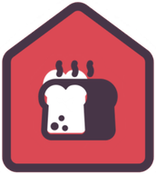
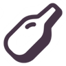
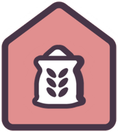
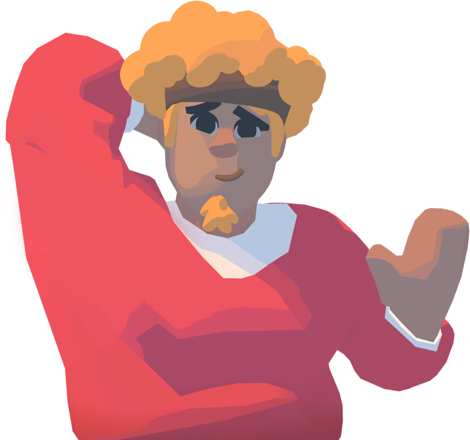

REFERENCE
Outlanders 2 Wiki
Buildings, resources, production, maps and game rules.
Version 30 · build 254 · 137 building definitions · 130 maps · All-pages A–Z index (1329)

Buildings92
- Author's Stand
 Bakery
Bakery Banner
Banner- Basic House
- Beehive
- Beer Stand
- Bonfire
 Book Workshop
Book Workshop Bootmakers' Shop
Bootmakers' Shop
Bottle Factory- Brewery
- Brick House
 Brickyard
Brickyard- Bridge
- Calla Lilly Planter
 Canteen Factory
Canteen Factory- Cheesery
- Chicken Coop
Plants29
 Apple Tree
Apple Tree- Ash Tree
 Banana Tree
Banana Tree Beet
Beet Berry Bush
Berry Bush Cabbage
Cabbage Carrot
Carrot Cauliflower
Cauliflower Corn
Corn Date Palm Tree
Date Palm Tree Dead Tree
Dead Tree- Dragon Fruit Tree
 Eggplant
Eggplant Fig Tree
Fig Tree Grape Vine
Grape Vine Jungle Bush
Jungle Bush Jungle Tree
Jungle Tree Mesquite Tree
Mesquite Tree
Resources42
- Animal Hide
- Barley Porridge
 Beer
Beer- Book
- Boots
 Bottle
Bottle- Bread
- Brick
- Canteen
 Cheese
Cheese- Clay
- Coat
- Cookie
- Dried Meat
 Egg
Egg- Flour
- Fondue
- Fruit
 Food11
Food11
 Gingerbread Man
Gingerbread ManMechanics10
- Needs
- How eating works
- Happiness
- Villagers and life
- Heat, cooling and water
- Days and time
- Gear
- Houses
- Gathering places
- Sandbox

Production chains79
- Apple Tree
- Ash Tree
- Bakery
- Banana Tree
- Beehive
- Beer Stand
- Beet
- Berry Bush
- Bonfire
- Book Workshop
- Bootmakers' Shop
- Bottle Factory
- Brewery
- Brickyard
- Cabbage
- Canteen Factory
- Carrot
- Cauliflower

Leaders13
 Chico
Chico Izzy
Izzy Jaqweshia
Jaqweshia Kaia
Kaia Maddy
Maddy Maira
Maira Miranda
MirandaCampaigns3
 Levels130
Levels130
- A Moon Part
- A New Start
- Alike!
- An Apple a Day
- Anthology
- Balloon Drop
- Barren't
- Bashful Valley
- Beach Please!
- Blown Away
- Breadification Bias
- Bundle Up!
- By the Sea
- Cache
- Carbless Whisper
- Certification Case
- Cheers!
- Cliffside Resort
Reference8
- Challenges
- Tournament Mode
- Changelog
- Guides elsewhere
- Sources & research
- Sources & artwork
- Contribute
- All-pages A–Z index
Spoilers
Looking to look ahead? Check out the spoilers section.
Browse Spoilers →